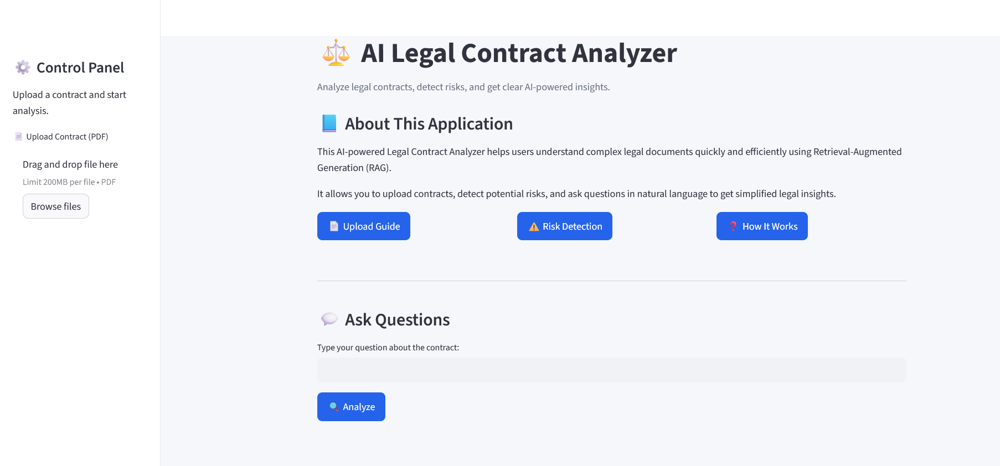

Featured GenAI Project01
AI Legal Document Assistant
RAG-powered legal assistant that allows users to upload legal documents, ask natural language questions, retrieve relevant clauses, and identify risks.
Focus: Retrieval-Augmented Generation, semantic search, document intelligence, prompt engineering, and grounded responses.
- Implemented FAISS vector search with Sentence Transformers.
- Generated contextual answers using retrieved legal clauses.
- Added risk detection, clause extraction, and source-based responses.